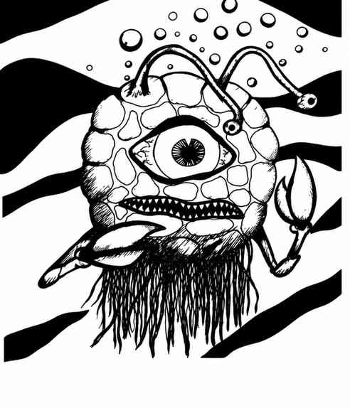

深海之眼 · Eye of the Deep
 |
|
深海之眼可能是眼魔的近亲，因为二者有显著相似之处。它栖息于海洋深处，只会缓慢漂浮并跟踪猎物；它有两条巨蟹般的钳肢，用来攫取与吞食小型猎物。最重要的是，它有一只巨大眼睛，可发出致盲闪光，使射线范围内的生物目眩、昏厥。光束由眼睛射出后先为半寸宽，再逐渐扩展至直径 3 寸；未通过对抗死亡射线／毒素的豁免检定者会受影响 2–8 个近战轮。它的眼睛还长着两条较小的眼柄，每条都能制造幻象；两只小眼睛也能分别独立施展并维持“定身人类”与“定身怪物”法术。
深海之眼生活在深处，因此无论身体、眼睛还是眼柄，护甲等级始终为 5。它被杀死前可承受 10–12 点伤害；若眼睛或眼柄遭到破坏，通常约一周后便会重新长出。
性情。 深海之眼凶残且好斗，通常会模仿陆生亲族眼魔的行为，但性情更为暴躁。